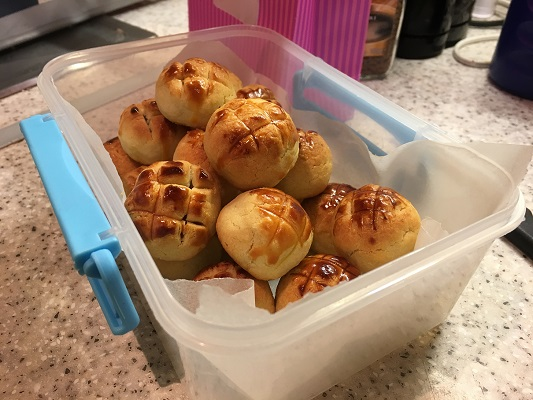

Home-made Pineapple Tarts
Description
These pineapple tarts are simple and fun to make!
Ingredients
- 500g Pineapple Filling (store bought)- can be made from scratch if you have the time! (link)
- 350g butter (room temperature)
- 100g condensed milk
- 2 egg yolks
- 500g of all purpose flour
- egg wash- 1 egg yolk
Method
- Place butter and condensed milk in a bowl and mix.
- Add in egg yolk one at a time and beat until combined.
- Mix in flour until soft (you can add abit more flour if its too sticky)
- Roll the pineapple filling into a ball (8g each) and roll the dough into a ball too (10g each)
- Flatten the dough into a round flat shape and place the pineapple ball in the middle of the flattened dough.
- To close the ball, bring the edges together and press lightly to seal. Lightly roll in your palms to shape it in a ball.
- Mark a few lines on the top side of the ball and apply egg wash on it.
- Bake it in preheated oven 150C for approximately 20 minutes or until golden brown.
- Cool before storing.